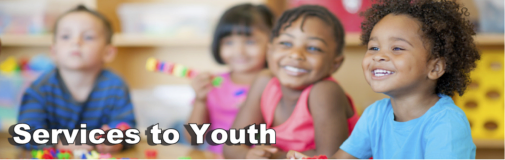

Services to Youth

An integrated approach to preparing youth for the global workforce as healthy citizens. “The question is not whether we can afford to invest in every child; it is whether we can afford not to.” Marian Wright Edelman. The words of the great children’s advocate, Marian Wright Edelman, resonate with us today more than ever.
The Links, Incorporated is committed to leading the way as champions of change, ensuring that youth are academically successful and engaged in healthy lifestyles. In 2012, more than one third of children and adolescents were overweight or obese. Research shows that active, healthy children achieve greater success in school, have greater self-esteem, and become healthy adults who lead productive lives. The Links, Incorporated created its first program facet, Services to Youth, to equip black youth to use their intellect and spirit of achievement to become successful and productive citizens.
Today, The Links, Incorporated continues to implement aligned, integrated and transformational programs that are responsive to the academic, health, cultural, social awareness, career development, and mentoring needs of youth. The Services to Youth facet uses an integrated approach to prepare young people to succeed as healthy citizens in the global workforce and to promote healthy lifestyles within families and communities. The Services to Youth facet continues to implement three national initiatives, two signature programs and two national programs in support of our mission to enrich and enhance the lives of black youth.
The primary goals of this facet are to:
• Close the achievement gap from pre-K through college, with the intent of preparing our youth for the global workforce as healthy citizens
• Promote the integration of a health and wellness component focused on youth, families and communities in our Services to Youth programs
• Develop training modules for local pre-K through college mentoring programs, to ascertain a high level of support for youth in our communities
• Expand and support science, technology, engineering, and mathematics education and promote the integration of the arts (STEM to STEAM)
• Promote and support historically black colleges and universities for ensured sustainability